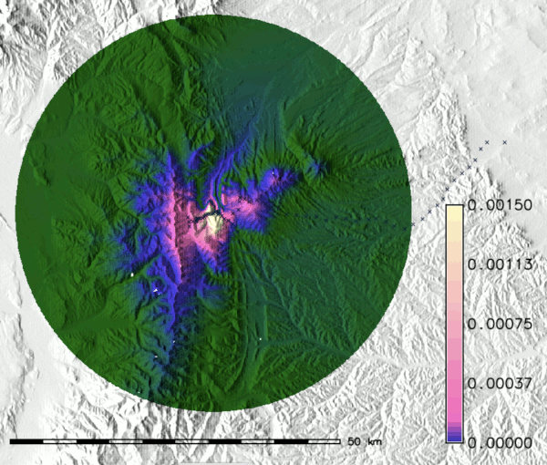
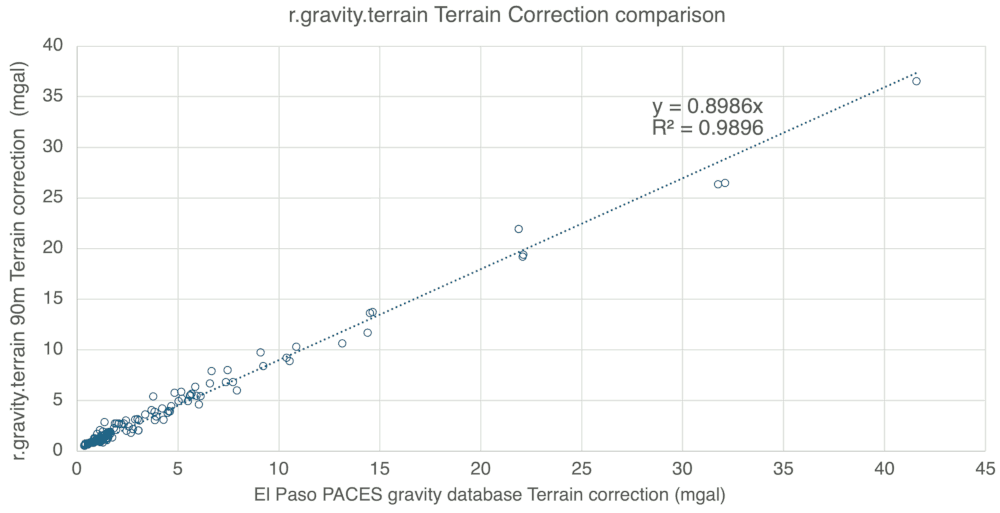

DESCRIPTION
The purpose of r.gravity.terrain is to compute gravity terrain corrections used in Complete Bouguer anomaly calculations from digital elevation models (DEM).
Parameter input elevation raster map is the DEM used in the terrain correction. The region resolution should be set to match the DEM. Calculations are done in meters and so a UTM coordinate system should be used. Parameter input vector map is the vector points file containing the measured gravity station locations. Parameter output file is the output file containing the calculated terrain corrections in mgal.
This tool also allows for multi-thread parallel processing to speed calculations.
Complete Bouguer Correction formula
This tool calculates the final term in the below equation (g(Terrain correction)).
g(Bouguer complete)=g(Observed) - g(Latitude) + g(Free Air) - g(Simple Bouguer) + g(Terrain correction)
A simple Bouguer correction approximates the gravity of rock from sea level to the measurement location as a flat slab. This works reasonably well in areas of low topographic relief. The gravity Terrain correction here takes into account the 3-D variability of crustal gravity due to spatial variations in elevation. In mountainous regions, this can be larger than the geological signature the gravity measurements are used to interpret.
NOTES
This GRASS tool uses the Nowell (1999) formula 7 (after Blais and Ferland, 1984 Eq 4) to calculate terrain corrections for each DEM point with respect to each gravity measurement location. The tool must be used in a UTM coordinate system as the calculations depend on Cartesian geometry.
Formula used in terrain correction
g= G*rho*Acs* ((1/d) – (1/d’))
This (g) is the gravitational effect difference from a uniform slab correction for a single DEM pixel with respect to the gravity station measurement location. It is a calculation for a flat-topped rectangular prism. There are other methods that could be implemented, but this is computationally efficient. Other methods include using prisms with slanted tops to better “fit" topography or fitting polynomial curves to topographic data. The thought is that with higher resolution DEM's there will be less difference between the various methods, and the one implemented here is computationally fast so that higher resolution DEM's can used more readily.
All of the calculations are done in meters, kg and seconds, but final terrain correction values are reported in mgal (m/s2 *100,000).
Formula variables
G = 0.000000000066743:
This is the universal gravitational constant ((m3/(kg*s2) ) and is therefore fixed.
Formula variables
Rho = 2670 kg/m2:
This is the rock density at a particular DEM pixel. Typically, in Bouguer terrain corrections this is a fixed value across all points. This GRASS tool allows the user to determine the density used in the terrain correction. However, future versions could be made to spatially vary according to a raster map to be more realistic. This is an entered variable.
Formula variables
Acs = 8100 m2: (for a 90 meter grid spacing)
This is the cross-sectional area of a square DEM pixel in meters. This should correspond the GRASS region grid spacing (and the actual DEM).
Formula variables
d = ((X2- X1)2+(Y2- Y1)1/2:
Distance from Gravity station to the center of the DEM pixel at constant elevation (calculated using the distance formula)
Formula variables
X1= gravity station UTM easting,
Y1= gravity station UTM northing,
X2 = DEM pixel center point UTM easting,
Y2= DEM pixel center point UTM northing
Formula variables
d’ = (((d2)+(hdif2))1/2)):
Distance from the Gravity station to the top of the DEM prism point in meters (calculated using the Pythagorean theorem)
Formula variables
hdif = | Z2-Z1 | (absolute value)
Formula variables
Z1= Gravity station elevation in meters
Formula variables
Z2 = DEM point elevation in meters
Use of minimum and maximum distance parameters:
These parameters set a minimum and maximum distance (d) from the Gravity station measurement (X1, Y1) for DEM terrain correction values to be calculated and summed.
The terrain correction formula is an approximation and gives incorrect results if the closest DEM center is too close to the Gravity measurement point. The threshold value is empirically between 1/3 and 1/2 the DEM grid spacing value. For example, when using a 90m DEM a minimum value of 45-90 m is suggested.
The maximum value is also subjective. Calculating a terrain correction for all DEM points out to 167 km from the station measurement point is considered complete as that is the horizon that effects an individual point on a spherical Earth. However, historically full calculations out to 167 km at a single grid spacing are not done due to computational intensity. This may or may not be an issue anymore. To accommodate this issue an inner terrain correction at a smaller grid spacing and an outer terrain correction at larger grid spacing have been used. The inner and outer terrain correction are summed together to create a complete gravity terrain correction. It still might be useful to do this if high resolution DEM data (e.g. 3 meter LIDAR) is used for the inner terrain correction. This would involve running the terrain correction routine twice with a different grid (region) spacing and minimum and maximum distances. The outer and then inner terrain corrections are then summed together.
EXAMPLE
g.region raster=90mSRTM_DEM
r.gravity.terrain input=90mSRTM_DEM maximum_distance=30000 minimum_distance=90 points=stations output=corrections.txt

Figure 1: This is an example of a gravity terrain correction calculated out to 30km from the measurement site (located in the Sangre de Cristo Mountains / Spanish Peaks of Colorado). This tool does not output the above raster, but instead it is a visualization of an intermediate calculation product.
The terrain correction value at each DEM pixel is summed and then output in this tool. The color scale shows gravity terrain correction values of individual pixels in mgal. For the above gravity point, the total terrain correction is 8.56 mgal for an n of 3,0163,432 cells.

Figure 2: Above is a comparison of the terrain correction output of this tool with values from the El Paso PACES gravity database downloaded in 2015 using 90m SRTM DEM data out to 167 km. The dataset is 131 gravity points from the Sangre de Cristo Mountains and Raton basin of Colorado. There is a strong linear correlation between the two correction techniques (R2 of 0.989), but the one used here outputs somewhat smaller values at high terrain correction magnitudes.
However, this could also be due to the small number of points with terrain correction values greater than 20 mgal.
REFERENCES
Nowell, D.A.G., 1999. Gravity terrain corrections—an overview. Journal of Applied Geophysics, 42(2), pp.117-134.
Blais, J.A.R. and Ferland, R., 1984. Optimization in gravimetric terrain corrections. Canadian Journal of Earth Sciences, 21(5), pp.505-515.
SEE ALSO
g.region,
r.mapcalc
AUTHORS
David W. Farris- East Carolina University
e-mail: farrisd19@ecu.edu
https://geology.ecu.edu/people/davidfarris/
{kind=link}
{kind=link}